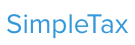
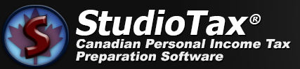
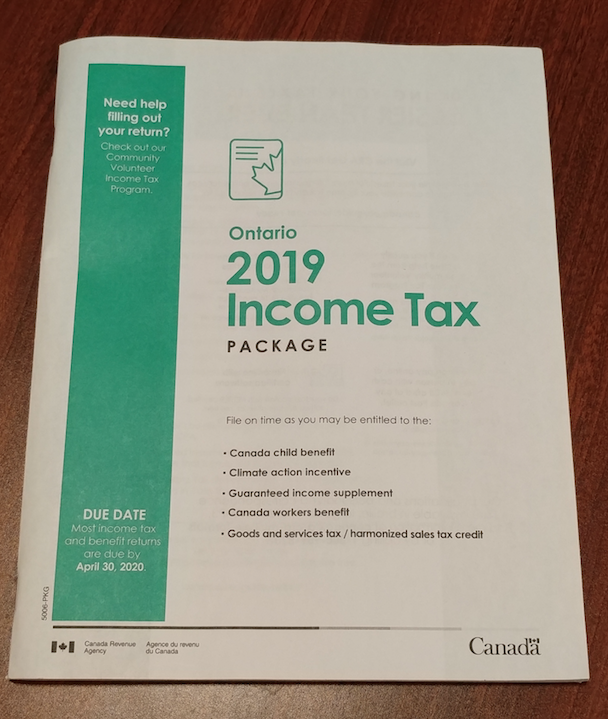
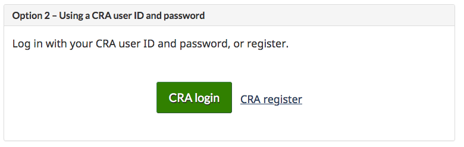
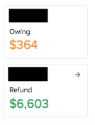

DIY Canadian: How-To Guides for Canadians
DIY Canadian: How-To Guides for Canadians *NOTE: This webpage is up to date for your 2020 tax returns (2021 tax season). The last update was on Apr 11, 2021.
Q: I'm a Canadian living in Ontario that wants to do my own tax returns. Where do I get started?
There are a number of different programs that will allow you to file your personal tax returns in Canada. The most popular and highly reviewed programs happen to both be free and allow you to file your tax return completely online: Wealthsimple Tax (formerly SimpleTax) and StudioTax.
*I personally prefer Wealthsimple Tax but also use StudioTax to double check that everything is correct for my Wealthsimple return. If the taxes owed/refund amounts match then that means I must have done it correctly in both tax software programs.
Since it is all done online, there is no need to mail anything in (e.g. slips, supporting documents, receipts) unless the CRA asks for them at a later date. Please note that you must be a resident of Canada in order to use Wealthsimple Tax or StudioTax as both programs use NETFILE (more on this later). NETFILE (and as a result both Wealthsimple Tax and StudioTax which are NETFILE ceritifed products) has a limit of 20 returns per account so it is not meant for professional tax preparers (who will instead have to use EFILE certified products).
It is recommended (although not required) that you wait until the beginning of April to start completing your tax returns if you want to do it all at once as you should have all of your tax slips by then (e.g. T3 slips for ETFs often don't arrive until the end of March/beginning of April since the mailing deadline for these is March 31). In my personal experience, I find that I receive my TD Direct Investing T3 tax slip in early March but end up having to wait until early April (e.g. April 2 last year) to receive my Questrade T3 tax slip.
Q: What if I don't want to do my tax returns online?
Well, you'd be in the minority since over 90% of Canadians file their tax returns online. BUT, you are in luck! The Canadian government (through the CRA) will release 'General income tax and benefit package' each year but will not be available until mid-February which would allow you to complete your tax returns the old-fashioned way with pen and paper. You can download a PDF copy of the guide online, you can order a paper copy (for free) or go to a local post office or Service Canada to get one. If you order it online, click on 'order the current income tax package' from the webpage that is linked directly above. Then find the province that you live in and click on the number of copies you want to order. Don't pay much attention to the cities that are listed in brackets (e.g. Winnipeg and Sudbury) as this just represents that tax centre that the returns will be processed at (there are only a few major tax centres). The rest of this DIY How-To guide is meant for Canadians who want to do their taxes online.
Q: Can I do tax returns for my wife/husband?
Yes, you can! If you only want to do their taxes then there is nothing further you need to do for that. However, if you want to represent your wife/husband for their income tax matters, access information or make limited changes to their account, then your husband/wife will have to authorize you as a representative. There are 2 levels of authorization: Level 1 authorization – Disclose information and Level 2 authorization – Disclose information and request limited changes. Even with Level 2 authorization, you will not be able to apply for child benefits on their behalf, change their address or telephone number, change their marital status, change their direct deposit information, manage their online mail, view/authorize/cancel other representatives or view/update children in your care. If you want to be able to do these things for them then you will need to look into becoming a legal representative which requires you to submit a legal document to the CRA.
Your wife/husband can give authorization online by logging into their 'My Account for Individuals'. They can give you online access OR (not and) telephone/in-writing access. If you want online access to your wife/husband's account, then you must register to Represent a Client first by logging into your CRA My Account and obtaining a RepID. You can give this RepID to your wife/husband so that they can authorize you to access their account online through their My Account.
You MUST obtain authorization from your wife/husband if you wish to use the Auto-fill my return service that is offered by Wealthsimple Tax (recommended).
Q: What are some terms that I should know when doing my own taxes?
Here are some common terms that will be helpful to know when preparing your own tax returns:
- Tax credit: Reduces your tax owed (as opposed to deductions which reduces your taxable income)
- Non-refundable tax credit: Used to reduce federal or provincial/territorial taxes payable to zero (so it can't be used to increase your tax refund or to create a tax refund when you wouldn't already have one). They usually cannot be carried over to future years (an exception is the tuition and education expense). So if you owe $100 for your tax returns and used a $300 non-refundable tax credit to reduce taxes owed, you would not have to pay the $100 but you would NOT get the extra $200. For this reason, non-refundable tax credits are applied first before refundable tax credits (since refundable tax credits can generate a tax refund). Some examples of non-refundable tax credits are the tuition and education expense (which you are allowed to carry forward to other years), caregiver amount, basic personal amount, charitable donations, medical expenses and the disability amount.
- Refundable tax credit: reduce the amount of tax you have to pay but also can generate a tax refund (unlike non-refundable tax credits). GST/HST credits, eligible educator school supply tax credit, CPP/EI payments, and the working income tax benefits (if you have a low working income) are examples of refundable tax credits.
- Deduction: Reduces your taxable income (as opposed to credits which reduces your tax owed). For example, RRSP contributions, childcare expenses, union and professional dues will reduce your total income to arrive at your net income for tax purposes. Capital losses of prior years will reduce your net income further to arrive at your taxable income.
- Total income: Income before deductions.
- Net income: Income after deductions (e.g. RRSP contributions, pension adjustment/registered pension plan on T4 and T4A slips, annual union dues, professional dues, Canada child benefit, etc.), tax-deductible expenses, investment losses, business losses
- Taxable income: Income after further additonal deductions and other losses (e.g. net capital losses of other years, non-capital losses of other years, capital gains deduction, Canadian Forces personnel and police deduction, etc.). Your federal and provincial tax amounts in all provinces except Quebec are based on your taxable income
- NETFILE: this is the electronic tax-filing service that enables Canadians to submit their individual income tax return directly to the CRA (Canada Revenue Agency) online. If you want to do your tax returns online (which is highly recommended), then make sure that the software program that you use to complete your tax returns is compatible with NETFILE. Wealthsimple Tax and StudioTax are both compatible with NETFILE. You must be a Canadian resident in order to use NETFILE.
- EFILE: this is the electronic tax-filing service that is meant for Tax Businesses and Tax Preparers (e.g. if you are hiring someone to do your taxes), not individual filings.
- T3 (Statement of Trust Income Allocations and Designations) tax slip: You will receive a T3 slip for income received from investments that are issued by 'trusts' (as opposed to a corporations) in non-registered accounts (e.g. dividends, capital gains, interest, Reinvested Capital Gains Distribution, return of capital, foreign income withheld for ETFs with foreign holdings). Since they are considered trusts (which most mutual funds are), I will only receive a T3 slip (no T5 slip) for the TD e-series index funds that I hold in my non-registered account at TD Waterhouse. If you have a Canadian ETF that holds Canadian stocks, then their dividends will be eligible for the dividend tax credit (the amount of that credit will be on the T3). Canadian dividends are eligible for dividend tax credit but US-listed ETF dividends are 100% taxable. NOTE: T3 slips for ETFs often don't arrive until the end of March/beginning of April (since the mailing deadline for these is March 31). For 'Reinvested Capital Gains Distributions' that appear on your T3 slips at the end of the year, you’ll have to pay tax on them despite not receiving any income. However, you do get to increase your adjusted cost base by an equal amount, which will reduce your future capital gains liability when you eventually do sell in the future. If you don’t adjust your cost base, then you’ll pay the tax again when you eventually sell the ETF. Capital gains reported by Canadian ETFs will be found on your T3 slip and are taxed at half your marginal tax rate (e.g. VCN and ZCN ETFs).
- T4 (Statement of Remuneration Paid) tax slip: You will receive a T4 slip for jobs in which you are an employee that receives salary and wages thatare above $500 during the year.
- Pension adjustment (found on your T4): this represents the mandatory deduction applied to your RRSP contribution room for the next calendar year. It is supposed to reflect the value of the pension benefits you earned in a year. For example, for the Ontario teacher's pension plan (which is a defined benefit plan), the calculation used to determine the pension adjustment is 9 multiplied by the annual accrued benefit (e.g. for teacher's it would be your annual salary multiplied by 2%) – $600.
- T5 (Statement of Investment Income) tax slip: You will receive a T5 slip for investment income earned if it is more than $50 (generally dividends, interest and foreign income) from investments that are issued by corporations (as opposed to trusts). Corporations could include banks, credit unions, investment firms, etc. that pay you interest, dividends or royalties. This could be ETFs in a non-registered account and/or interest accumulated from a bank savings account, etc. Different than the T3 slips, the T5 slip does not record any capital gains or losses that may be realized on the sale of investments. T5s are required to be mailed by February 28 (so earlier than T3s). Capital gains distributed by US-listed ETFs are treated as foreign income on your T5 slip, and they are fully taxable.
Q: When should I receive all of my 'tax slips'?
All of your employment-related income slips have to be issued and sent by the end of February. If you never got a slip then you should contact your employer. Your investment-related tax slips often don't come until March and sometimes may even take until early April to come in (e.g. my T3 for my non-registered investment account with Questrade wasn't provided to me until Apr. 2 last year).
Q: When do I need to file my taxes by?
There is a five per cent late-filing penalty if you don't get your tax returns submitted by April 30 (or if April 30 falls on a weekend then you have until the following Monday) at the very latest. Even if you are a missing a tax slip, it is better to guess how much you think you made and make a note on your return that indicates that you weren't able to get your slip with the name/address of the person that was responsible for giving you that slip. If (and only if) you owe money after submit your tax return, you must also pay that balance by April 30 since interest on taxes owing starts April 30. You will also pay a late filing penalty if you file your tax returns after April 30 and owe taxes (e.g. if you are one day late with filing your tax return then you are immediately penalized with a 5% increase on your tax bill and an additional 1% penalty is added every month). If you do NOT owe taxes, then there will not be any late filing penalties charged or any interest that you will be required to pay on a balance owing (but if you deserve a refund, then you will not get that refund until your taxes are filed).
So is it fine to file your tax return on April 30th (the last day) without penalty? Yes, you can wait until the last day to file the return without penalty. If you pay using online banking, the payment transaction is pretty much immediate BUT I still like to pay at least a few days in advance of the April 30th deadline just for my own peace of mind that I won't have to pay interest if I owe money. If you need to make a payment to the CRA for your balance owing, go to the CRA payment page for options. There are multiple ways to pay a balance owing: through the CRA’s My Payment service (lets you make payments online through Visa or MasterCard at a participating financial institutions), online banking (by adding "CRA (revenue) – current-year tax return" as a bill payment payee), in person at any Canada Post outlet using cash or a debit card, or using the CRA’s pre-authorized debit service.
As mentioned earlier, it is recommended (although not required) that you wait until the beginning of April to start completing your tax returns if you want to do it all at once as you should have all of your tax slips by then (e.g. T3 slips for ETFs often don't arrive until the end of March/beginning of April since the mailing deadline for these is March 31). In my personal experience, I find that I receive my TD Direct Investing T3 tax slip in early March but end up having to wait until early April (e.g. April 2 last year) to receive my Questrade T3 tax slip. If you don't do it all at once, that's fine since Wealthsimple Tax will allow you to select which documents that you want to 'auto-fill'.
Q: What else should I know about?
Individuals in Ontario will receive a tax-free 'Climate Action Incentive' payment after filing their 2018 tax return starting in early 2019 (this is new as of this year in response to the new federal carbon tax). It is a refundable tax credit. Climate Action Incentive payments in Ontario will be calculated as follows for 2019: $154 for a single adult or the first adult in a couple, $77 for the second adult in a couple and $38 for each child in the family. In 2020, these amounts will change to $226, $113 and $56. For 2021, they will be $295, $147 and $73. For 2022, they will be $360, $180 and $89. Rural residents (outside of Census Metropolitan Area as defined by Statistics Canada) will receive an additional 10% of the payment amount for the 'Climate Action Incentive' in recognition of their increased energy needs (e.g. transportation). So how do I make sure that I get this? You will need to claim the Climate Action Incentive payment on your tax return. This will involve filling out a short schedule identifying the number of adults and children in the family unit for which payments would be claimed. There will be one claim per family.
Q: Do I get a deduction for union dues on my tax return? How about professional membership dues?
Yes you do! You can claim a deduction for the amount of union dues if they are included in box 44 of the T4 slip issued by your employer. A tax deduction can then be claimed on line 212 on your tax return for the amount found in box 44. Note: this does not always include professional membership fees (e.g. OCT fee if you are a teacher). My union dues are included as 'OSSTF' and then twice per year I am charged a $60 'SECLLEVY' which total to the amount found in box 44 (aka my union dues).
Professional membership dues can be claimed for a tax deduction IF your employer does not reimburse you for these dues. For example, as a teacher in Ontario, your OCT annual membership ($150) fee is tax deductible and you can get a tax receipt by logging into your OCT account and downloading it. You will have to manually input this into the 'Annual Dues, Professional Dues or Like Dues' in Wealthsimple Tax (e.g. description can be 'Ontario College of Teachers Annual Membership Fee' and the amount would be $150) even though it might be taken right off your pay stubs by your school board (since it's not included in union dues or anywhere on your T4 slip.
You cannot claim previous years' union dues or professional membership dues for the current tax year (even if you didn't claim the deductions in those years). However, you can amend tax returns for past years and add the deductions.
Union dues (and professional membership dues) allow you to deduct eligible amounts paid, in full, from your income. This means that no tax is payable on any income amounts which are used to pay union, professional dues or insurance premiums. There is also no limit on the amount that you can claim.
Q: Do I need to worry about foreign withholding taxes in non-registered accounts?
Many countries place a tax on dividends paid to foreign investors (e.g. for U.S.-listed ETFs, it is 15%) and is called a foreign withholding tax. If you hold funds in a non-registered account, then the foreign withholding taxes will always apply (unlike in an RRSP since the U.S. has a treaty with Canada that waives the tax in an RRSP for U.S.-listed ETFs though not the TD e-series U.S. index fund). Using your T3 and T5 tax slips from your investment accounts, you can recover some or all of these withholding taxes by claiming a foreign withholding tax credit on your return.
Wealthsimple Tax will automatically calculate your foreign tax credit (a non-refundable tax credit) amount for you if you include the foreign tax paid and source country from your T3 and T5 tax slips. TD and Questrade will include the foreign tax paid on your tax slips but you will have to include the source country (e.g. U.S. for U.S.-listed ETFs). You can also include United States as the source country for the TD e-series funds (TDB902 and TDB911) as that is what my previous accountant did (hopefully they were right!). I contacted the CRA and they said that writing down the U.S. as the wrong 'source country' for your funds is not likely to be a huge deal as a 15% withholding tax on your investments (which is what the U.S. has) is pretty standard. If you wanted to double check that you are paying a 15% withholding tax, then you could multiply the foreign income on your Questrade T5 and your TD T3 by 0.15 and you should end up with the number included on your T5/T3 as 'foreign tax paid' (my Questrade T5 was exact when I did this, but my TD T3 showed I paid a little less than a 15% tax but this may be because there is some Canadian equities included inside of the TDB911 fund which would not be taxed). If you are not sure of the source country, then you can choose 'multiple' in dropdown menu on Wealthsimple Tax (which is the recommendation on the Wealthsimple Tax website). However, after emailing Wealthsimple Tax, even they said that it would be fine to put down U.S. as the source country if you are unsure so that's what I did. The reason you need to include the source country is that the foreign non-business tax credit is calculated separately for each foreign country. If the total foreign taxes are less than $200, CRA will usually allow a single calculation (but once again, in my situation, it has been fine to just use the U.S. as the 'source country' for all my ETF foreign investments).
You will see the foreign income tax paid (in U.S. dollars) for your U.S.-listed ETFs (e.g. VTI and VXUS) on the T5 that is issued by Questrade in box 16.
The U.S. Index (TDB902) TD e-series fund and International Index (TDB911) TD e-series fund are subject to foreign witholding taxes as well. These Canadian funds hold foreign securities directly and it is good to have these in a non-registered account since you can recover the foreign withholding taxes this way. The amount you paid will be on your T3 (Statement of Trust Income Allocations and Designations) from TD and in box 34 you will see the "foreign non-business income tax paid".
If you sell U.S.-listed ETFs, the capital gains are exempt from tax in the US due to the tax treaty, so there will be no withholding tax deducted from money made on the sale. For this reason, the gains from these sales should not be included in the foreign tax credit calculation.
Q: I have employee health and dental benefits. Do I need to include them in my taxes somehow?
No you don't! Usually, employer benefits are taxable but the exceptions are health and dental benefits. In Canada (as of April 2019), health and dental benefits are allowed to be paid out tax-free to employees (which is what happens in my case) and so are not included as part of an individual's taxable income. Justin Trudeau and the Liberal government flirted with the idea of taxing health and dental benefits but have now stated that they will not do so.
Could I receive a tax deduction for the premiums I paid? If your extended health care and dental benefits are like mine, you pay for a small portion of the premium (while my employer pays the majority of it). So although private health-plan premiums are considered medical expenses since they aren't reimbursed by your private plan, I don't pay enough premiums to get a tax deduction.
If you pay a lot more than me for your premiums, you could get federal tax credit for medical expenses if they exceed either 3% of your net income OR $2,302, whichever is lower (as of the 2018 tax year). I pay approx $150 in premiums for extended health care and about $80 in premiums for dental benefits per year so I do not exceed the minimum threshold to be able to get a federal tax credit.
Q: Is there anybody that I can call to help me with my taxes if I get stuck or have questions?
Yes there is! CRA agents are available Monday to Friday from 9 am to 5 pm throughout the year and during February-April, these hours are extended to 9 pm on weekdays and from 9 am to 5 pm on Saturdays (except Easter weekened). The phone number to call is 1-800-959-8281.
OFFICAL  DIY CANADIAN HOW-TO GUIDE: Filing Your Own Taxes in Canada
DIY CANADIAN HOW-TO GUIDE: Filing Your Own Taxes in Canada
Let's start doing taxes and let the fun begin...
- Make sure you are registered for 'My Account' with the CRA
- Go to the following website to register (or login) to your CRA 'My Account': https://www.canada.ca/en/revenue-agency/services/e-services/e-services-individuals/mycra.html
- Obtain authorization as a representative if you are preparing a tax return for a family member or friend (e.g. wife/husband) through the CRA
- This authorization will allow you to use the 'auto-fill my return' service that is offered through the Wealthsimple Tax software
- The authorization requires that you register to Represent a Client first by logging into your CRA My Account and obtaining a RepID. You can give this RepID to your wife/husband so that they can authorize you to access their account online through their My Account. Your husband/wife will have to authorize you as a representative by clicking on the 'Authorize representative(s)' link on the main My Account screen then follow the instructions from there (it will only take a minute). Once they have authorized you, you can use the 'Auto-fill my return' service to access their tax information and file a return for them.
- Use the 'Import Slips' option (formerly 'Auto-fill my return' with SinpleTax) that Wealthsimple Tax offers to allow you to automatically fill out information needed for your tax return directly from the CRA
- If you have CRA MyAccount you can have Wealthsimple Tax or StudioTax autofill your return with all the tax slips and information that the CRA has on file. This can complete up to half of your return instantly.
- With Wealthsimple Tax or StudioTax, you can always auto-fill prior to getting all of your tax documents (e.g. the last tax document that I usually receive is my T3 from Questrade) and then select specific slips when you run the 'Import Slips' service. When you are asked what slips to import, just choose the new ones, and that's all that will be brought in. Nothing else will be affected if you have already completed some of your tax return or auto-filled previously.
- Wait until the beginning of April to do this so that your CRA Auto-fill is as accurate as it can be. The earliest you use the auto-fill service for 2018 tax returns is Feb. 18, 2019 since that's when NETFILE opens. It is recommended (although not required) that you wait until the beginning of April to start completing your tax returns as you should have all of your tax slips by then (e.g. T3 slips for ETFs often don't arrive until the end of March/beginning of April since the mailing deadline for these is March 31). As mentioned earlier, you can always auto-fill prior to getting all of your tax documents (e.g. the last tax document that I usually receive is my T3 from Questrade) and then select specific slips when you run the Auto-fill service. When you are asked what slips to import, just choose the new ones, and that's all that will be brought in. Nothing else will be affected if you have already completed some of your tax return or auto-filled previously.
- The CRA should have most tax information slips and other tax-related information for the tax year by mid-March but if some information is not available, it is possible that the CRA has not yet received it. So if you use the auto-fill option before April, you will want to double check your information at the beginning of April to ensure that there isn't any new information that was received a little later than expected. It is also up to you to double check that the information that the CRA auto-fills for you is accurate.
- The information that should be auto-filled include tax slips such as T3, T4 and T5 tax slips, Registered Retirement Savings Plan contribution limit, capital gains and losses, non-capital losses, capital gains deductions, Lifelong Learning Plan repayment amount
- Can you split income from a T5 slip between you and your spouse? As per the CRA website, "Once the Auto-fill my return service delivers the T5 slip into a NETFILE-certified software, you need to report your share of interest from a joint investment based on how much you contributed to it. You can enter the percentage of interest directly in the software. The difference would need to be declared by the other individual."
- Note: If it’s your first year tax filing with NETFILE then you won’t have services typically available through CRA MyAccount.
- Make sure that you get all of the deductions, tax credits and benefits that you can get on your returns
- Find out about all deductions and tax credits that you can claim on your return to reduce the amount of tax you have to pay (and where to claim these amounts on your tax return or on a related form or schedule)
- What I usually do is copy my previous years tax returns but then check the link that the Canadian government puts out about what's new for this year's tax-filing season. Here is the link for the 2019 tax year (2020 tax-filing season).
- Make sure that you click on 'Provincial and territorial tax and credits for individuals' link on the webpage that is linked above to find about tax credits and benefits that are available for your province.
- Some benefits/tax credits can be difficult to find on the CRA website. For example, there is an 'Eligible educator school supply tax credit' that allows eligible educators to claim up to $1,000 of eligible teaching supplies expenses (on line 468 and 469) but can't seem to be found on the main deductions and tax credits page. The refundable portion is 15% of the total eligible fees (so you could get up to $150 back on the maximum $1000 expense claim).
- Gather all of your tax slips (e.g. T5s, T3s)
- Sometimes there is no taxable distribution in the year and therefore no T5 or T3 slip issued for mutual funds.
- U.S.-listed ETFs will be reported on your T5, while Canadian-listed ETFs (as well as TD e-series funds) will be reported on your T3.
- Note: The T3s that you personally receive in your account from Questrade, TD Direct Investing, etc. will combine all of your Canadian-listed funds (ETFs, TD e-series funds) into one T3 with the trust's name being the brokerage (e.g. TD Asset Management Inc.). However, you may notice (especially if you use the auto-fill option through StudioTax or Wealthsimple Tax) that the CRA receives a separate T3 for each Canadian-listed ETF/TD e-series fund with the trust's name being the ETF/fund name or provider (e.g. Vanguard or BMO). For example, I receive one Questrade T3 in my account that combines the VCN and ZCN ETFs but the CRA receives a separate T3 for VCN and ZCN ETFs. For your tax returns, it is completely fine to use either the combined T3 or to use the separate T3s. Having the T3s split into separate funds/ETFs is only useful for tracking your ACB (e.g. due to return of capital reported in box 42; see below) for when you sell the fund/ETF in the future. If you are already doing this like myself (e.g. tracking ACB in an excel spreadsheet) then there is no real benefit (but also no downside) of splitting your T3s into separate funds/ETFs. There's no tax consequence to filing the numbers together. It's mostly for organization sake showing them separately.
- Box 42 (which is the 'amount resulting in cost base adjustment') on your T3 does not actually have to be reported (although it doesn't hurt if you do report it) as it doesn't affect your taxes right now. It can be used for calculating your ACB and in this case you will want to know exactly which ETF/fund it came from (so the combined T3 will not be as useful here and the T3s by ETFs sourced from CRA is clearer for ACB calculation). It represents a distribution or return of capital from the trust. This return of capital will reduce your ACB so when you do sell some shares in the future, your capital gains will be higher.
- You will also notice that the T3 from Questrade includes a 'T3 Summary of Investment Income and Expense' (which lists return of capital, capital gains div., foreign income, foreign tax paid, interest income, etc. for each ETF) on the first couple of pages before the standard 'Statement of Trust Income Allocations and Designations' part of the T3. This does not have to be included in your tax returns and is once again just another way that you can get information that may be useful for tracking/calculating your ACB (not important until you sell an ETF/fund).
- Keep in mind that when I am filling out my tax return through Wealthsimple Tax and as I inputted my T3 from Questrade (which is based on my VCN and ZCN ETFs), Wealthsimple Tax has an optional box that asks for "Foreign capital gains included in box 21". This is NOT the amount in box 25 ("foreign non-business income") as foreign capital gains would be listed separately in the footnotes. If box 21 includes capital gains from foreign property, there should be an asterisk (*) beside the amount in box 21 and the amount of foreign non-business capital gains (which also could be called non-business income for foreign tax credit or foreign non-business income included in box 21) should be indicated in the footnote area separate from the "foreign non-busisness income" (box 25).
- I recommend that you use StudioTax's ability to print all documents from the CRA so that you have the separate information for each ETF/e-series fund that you will find useful when tracking/calculating your ACB when you sell the ETF/fund in the future.
- IMPORTANT NOTE: You will not receive a tax slip (e.g. T5) if you did not earn more than $50 in investment income (e.g. interest from bank account). This does not mean that you don't have to report that income. For example, I would have to call my bank, Simplii Financial, to find out how much interest I earned on my chequings/savings accounts if it was under $50 and then add that amount as 'Other Investment Income' in Wealthsimple Tax.
- Check your contribution receipts if you made any contributions to your registered plans (e.g. RRSP/TFSA)
- For 2018 tax returns (that you would complete by April 2019), you should receive a contribution receipt if you made any contributions to your registered plans such as your RRSP from March 1, 2018 to March 1, 2019.
- If (and only if) you sold any shares of your ETFs, TD e-series funds, etc. then you will need to include a T5008 and calculate the adjusted cost base for the funds that you sold
- Check out my write up on calculating adjusted cost base of your ETFs if you're unsure of how to do this.
- You will also get a T5008 when you do Norbert's Gambit since you will be selling units of DLR.U.TO in order to get US cash (see my webpage on Norbert's Gambit if you want more information on what this is).
- Determine how much you and your spouse must claim for your joint investment income (e.g. joint bank accounts that pay interest)
- You are required to report your share of income from a joint investment account based on how much you contributed to it in the tax year.
- Many people report that they always split the income from the T5 (statement of investment income) 50/50 rather than tracking the exact percentages of contributions and have never run into problems with the CRA. This is a good pratice if the incomes are pretty similiar between you and your spouse.
- Claim the Home Buyers' Amount (Line 369) which results in a non-refundable tax credit if you were a first-time home buyer for the year you are doing taxes for
- You can claim a $750 non-refundable tax credit (meaning it reduces taxes owed but not the point of a refund) for the purchase of a qualifying home in the year if both of the following apply: you or your spouse (or common-law partner) acquired a qualifying home (e.g. it is a single-family house, semi-detached house, townhouse, mobile home, condo, apartment) AND you did not live in another home owned by you or your spouse or common-law partner in the year of acquisition or in any of the four preceding years (meaning you must be a first-time home buyer)
- This non-refundable tax credit is based on a maximum downpayment amount of $5000 and is calculated by multiplying the lowest personal income tax rate for the year (15%) by the $5000 (=$750).
- The credit can be claimed by the person who buys the home, by the spouse or common-law partner of that person or it can be split between spouses/partners.
- You can only use this tax credit in the year of acquisitoin of your home (can't be carried forward).
- Note: The land transfer tax rebate is appplied by your lawyer upon closing on the house (so this will not be included in your tax returns).
- Apply for the Ontario Trillium Benefit
- The Ontario Trillium Benefit combines combines the following three credits to help pay for energy costs as well as sales and property tax: Northern Ontario Energy Credit, Ontario Energy and Property Tax Credit, Ontario Sales Tax Credit.You need to be eligible for at least one of the three credits to receive the benefit.
- This benefit is meant for low-moderate income families (household income of less than approx. $60,000) so if you make a good amount of money, then you might not be eligible for this credit. However, there is no harm in applying for it on your tax return so you might as well do it just in case!
- Your eligibility is based on your family net income from the previous tax year. Your eligibility may change because of differences in your family net income, your place of residence, your age or your family status.
- If you want to know for sure whether you qualify for the Ontario Trillium Benefit, then you can use the Ontario government's tax credit calculator.
- Claim the Climate Action Incentive Payment refundable tax credit
- The federal government imposed a carbon tax and as a result they have introduced a new climate action incentive payment which is a refundable tax credit (so will reduce your balance owing and may increase any refund) for your 2018 taxes if you live in Saskatchewan, Manitoba, Ontario or New Brunswick (since these provinces have not adopted their own provincial carbon tax and/or don't meet the federal standard for carbon pollution pricing). In Ontario, a family of four could recieve $307 in 2019.
- One individual per family (e.g. either you OR your spouse will get to claim it but not both of you) in Ontario will receive a tax-free 'Climate Action Incentive' payment after filing their 2018 tax return starting in early 2019. The CAI payment will be automatically applied to your balance owing for the year, if applicable, or may increase the amount of any refund you may be entitled to.
- Climate Action Incentive payments in Ontario will be calculated as follows for 2019: $154 for a single adult or the first adult in a couple, $77 for the second adult in a couple and $38 for each child in the family. In 2020, these amounts will change to $226, $113 and $56. For 2021, they will be $295, $147 and $73. For 2022, they will be $360, $180 and $89. Rural residents (outside of Census Metropolitan Area as defined by Statistics Canada) will receive an additional 10% of the payment amount for the 'Climate Action Incentive' in recognition of their increased energy needs (e.g. transportation). You can use this website to help you determine if you are oustide of a Census Metropolitan Area as of December 31, 2018.
- You live in a small or rural community if you do not live in these census metropolitan areas: Ottawa, Kingston, Belleville, Peterborough, Oshawa, Toronto, Hamilton, St. Catharines-Niagara, Kitchener-Cambridge-Waterloo, Brantford, Guelph, London, Windsor, Barrie, Sudbury, or Thunder Bay.
- Since I live just outside of the Hamilton census areas, I am eligible to receive the additional 10% of the payment amount for the Climate Action Incentive
- Since it is just myself and my wife for my 2018 taxes, we would receive a total of $231 ($154 + $77) for the Climate Action Incentive Payment before factoring in the additional 10%, which brings it to $254.10 since I am a rural resident.
- So how do I make sure that I get this? You will need to claim the Climate Action Incentive payment on your tax return. This will involve filling out a short schedule identifying the number of adults and children in the family unit for which payments would be claimed. There will be one claim per family.
- You will need answer yes to the question that asks "Did you own specified foreign property with a total cost of more than $100,000 in 2018?" and file a T1135 form if the combined cost at the time of purchase (so not current market value) of all your investments exceeds $100,000 CAD at any point during the year
- This $100,000 CAD includes individual US stocks and foreign equity ETFs trading on US and other foreign stock exchanges (e.g. VTI, VXUS from my portfolio). If you have a cost base of more than $100,000 of what is called 'specified foreign property' you have to tick that box and fill out a CRA form called the T1135. The $100,000 is based on individual amounts and not your household income.
- U.S.-listed ETFs that are held inside of a Canadian investment account (e.g. with one of the banks or Questrade) are considered "property held in an account with a registered Canadian registered securities dealer or a Canadian trust company" which is simplified on Wealthsimple Tax as "property held with a registered Canadian dealer" (so it is not "shares of non-resident corporations" or "funds held outside Canada" as you might expect) when filling out the T1135. However, this checkbox on your T1135 is not super important so if you check the wrong one, I wouldn't worry too much about it as there wouldn't be any tax consequences (or so the CRA has told me). I confirmed with Questrade that they are considered a "Canadian registered securities dealer" just to double check.
- Both VTI and VXUS are domiciled (meaning registered for tax purposes) in the US, so you would only need to write down United States when filling out the "top three countries (based on maximum cost amount)" part of the T1135 (regardless of whether the ETFs hold shares in companies from elsewhere in the world).
- To complete the "income from all specified foreign property" in Part A of the T1135 for a U.S-listed ETF, look at your T5 from your non-registered investment account and find the box 15 amount. Multiply that amount (which is in U.S. dollars) by the annual exchange rate for USD to CAD from the Bank of Canada which can be found on their website and this is what you will write down as your "income from all specified property".
- For the "date prepared" box (found in Wealthsimple Tax), you just write down the day that you completed the T1135 part on Wealthsimple Tax.
- If you have between $100,000 and $250,000 CAD in foreign property (cost base) then you only need to complete Part A of the T1135 form which is called the "Simplified reporting method".
- There is also a higher threshold of $250,000 that you should be aware of as this will mean you will have to provide more detail and you will need to complete Part B which is called the "Detailed reporting method" of the T1135 form instead of just Part A.
- If you sold any of this foreign property (e.g. U.S. listed ETF) you will also need to calculate any gains and losses realized on the sale of it in the "Gain (loss) 2018 from the disposition of specified foreign property" part of the T1135. Disposition refers to sale. You can leave this box blank if you did not sell any of your ETF units during the year.
- Determine if you have unused tuition, education and textbook amounts (aka tuition tax credit)
- The 'tuition, education and textbook amounts' (aka tuition tax credit) is a non-refundable tax credit that allows students to use their school tuition fees to reduce their taxable income or transfer up to $5,000 worth of credits to their spouse or common law partner, their parents or their grandparents (can only transfer if it hasn't been carried forward to future years).
- You must claim the tuition and education amounts if you have income to claim it against (so can't choose to just claim a portion of it).
- You must claim the tuition amount on your own return before you are able to transfer it to your parent, grandparent, or spouse/partner. You must reduce your tax to zero before you can transfer any leftover amounts. Only you can claim unused tuition amounts that have been carried forward from a prior year. So if you didn’t pay any tuition this year, then you will not be able to transfer your tuition amounts to someone else.
- When completing your tax return, you must include last year’s unused amount (which can be found on your Notice of Assessment) and any tuition amounts from this year. You can find this information on your CRA MyAccount under 'Tax Returns'.
- The credit is determined by adding together all tuition fees, multiplying the amount by the lowest federal tax rate for the current tax year (e.g. $1000 tuition fees leads to $150 tax credit).
- Determine if and how much of your RRSP contributions you want to use
- This is where you will want to look at your tax rate. Your tax rate includes both provincial and federal tax rates. This website provides a good overview of the tax rates in Ontario. I would especially pay attention to the "Combined Federal & Ontario Tax Brackets and Tax Rates Including Surtaxes" section.
- You can calculate whether you think it's worth it to use all of your RRSP contributions OR you can carry forward the deduction to another year (will become an unused RRSP deduction for next year). For example, it would be worth it to get your taxable income down to $46,605 if you make approx. $60,000 as you will be getting a 29.65% tax break on all of that money (e.g. in that case 29.65% of $13,395 which would be $3971.62 of cash back to you) and it's only approx. a 4% increase up $85,923 (so you're not going to get a ton of benefit by waiting). However, if you take your taxable income down to $42,960 (from $46,605) you will get a 24.15% tax break on that additional $3645 (so $880.27 of cash back to you) and any amount you take it down below $42960 will have a tax break of 20.05%. So you may want to save some of this RRSP room if you know your going to be making more money the next year to maximize your tax break (effectively a guaranteed return of 9.60% for the next year if you don't push your taxable income below $42,960 or a guaranteed return of 5.50% if and you know you will be making upwards of $60,000 since you will be taking the deduction off of higher taxed money the next year). For example, the $3645 that could be used to give a 24.15% tax break that gives $880.27 cash back (mentioned earlier) could give $1,080.74 back at the 29.65% tax rate ($200.47 difference). A $200.47 increase on $880.27 is effectively a 35.05% increase! That's one hell of an investment on that money and is worth the wait. So my recommendation is that if you are making between $46,605 and $75,657 and have an RRSP deduction to use, use it to bring your taxable income down to $46,605 and save the rest for the next year since you'll get a better tax break (assuming you will make the same amount of money or more).
- You do not need to apply for the Goods and Services Tax (GST) Credit
- Since 2014, the CRA will automatically determine whether you can receive this credit. If you have a spouse/partner, only one person will be able to receive the credit.
- Check and optimize your return with Wealthsimple Tax
- Prior to doing this, I always screenshot my tax refund or amount owing that Wealthsimple Tax shows on the left side of the screen (green numbers for refund and orange for owing that is shown in the picture to the right with the names blacked out) so that I can compare what the 'Check and Optimize' button actually did.
- I would also click the 'lock' button for the amount of your RRSP deduction if you calculated it to get yourself to a lower tax bracket (as recommended in step 14 above)
- In the “review” section, you can click on the “Check and Optimize” button to get suggestions, warnings, errors, etc. regarding your tax return.
- You can check out the summary of everything you have inputted before submitting.
- Submit your tax return
- You should receive tax refunds within a week or two at most (if you are eligible for one) and you’ll get the refunds directly to your bank account if you are enrolled for online deposits with the CRA.
- Pay the CRA if you have a balance owing
- There are multiple ways to pay a balance owing: through the CRA’s My Payment service (lets you make payments online through Visa or MasterCard at a participating financial institutions), online banking (by adding "CRA (revenue) – current-year tax return" as a bill payment payee), in person at any Canada Post outlet using cash or a debit card, or using the CRA’s pre-authorized debit service.
- My Mastercard and Visa were not eligible since they need to be 'debit' Visa/Mastercards so I ended up just using my online banking and adding the CRA as a bill payee, then doing a bill payment for the amount that I owed on my tax return. Here's the CRA's explanation of how to do this: https://www.canada.ca/en/revenue-agency/services/about-canada-revenue-agency-cra/pay-online-banking.html. The picture below (from my online bank account), shows the 'billing companies' you could choose from to pay the balance owing for you tax return. You could choose either the CRA (Revenue -2019 Tax Return) or CRA (Revenue) Tax Amnt Owing options. Personally, I went with the latter but both are fine to use.
Q: What happens once I have finished filing my tax return online?
Upon submitting your tax returns, you will get an immediate (within seconds) confirmation number indicating that the CRA has received your tax return. After you receive the confirmation number from the CRA, the CRA may need to contact you to verify some information so you must ensure that a working phone number is provided on your tax return.
Once your return has been fully processed, the CRA will send you a notice of assessment in the mail (takes up to two weeks in the mail if you submitted your returns electronically) OR you can get it immediately after the return has been processed and received by the CRA using Express NOA which Wealthsimple Tax supports. A notice of assessment shows the date the CRA assessed your return and whether you have a refund, an amount owing, or a zero balance. It also includes a tax assessment summary and a RRSP/PRPP deduction limit statement. If you are registered for online mail, your notice of assessment will not be mailed to you but you will receive an email notification when new 'mail' is available for you to view in My Account. For security reasons, this email notification will not contain any links. If you are antsy, you can check your CRA My Account for your return status at any time.
Q: How will I get my refund?
If you are signed up for direct deposit and have provided bank account information to the CRA, the CRA can directly deposit your tax refund (if you get one). To sign up for direct deposit, you must complete and mail in the Canada direct deposit enrolment form as it cannot be done online.
Q: Oops! I've made a mistake on my tax return. Can I resubmit it?
Starting February 26th, 2018, the CRA introduced the ReFILE service to give taxpayers the option of having an amended income tax and benefit return filed electronically. This service will let taxpayers use NETFILE to send amended returns for a current or previous return and will only be accepted through ReFILE if the original return was completed and sent electronically through NETFILE. To make changes after you submit a return through NETFILE, you have to wait for your Notice of Assessment. Once this has been received, you can to My Account and click 'Change my return' (this can be done for tax returns up to nine years ago). Wealthsimple Tax supports ReFILE.
Comments - Ask questions and/or provide feedback below!
*you can comment as a guest without registering/signing in by clicking on the 'Name' box below and checking the 'I'd rather post as a guest' box. If you don't feel comfortable providing your own email, you can just make one up (e.g. fakeemail@gmail.com).